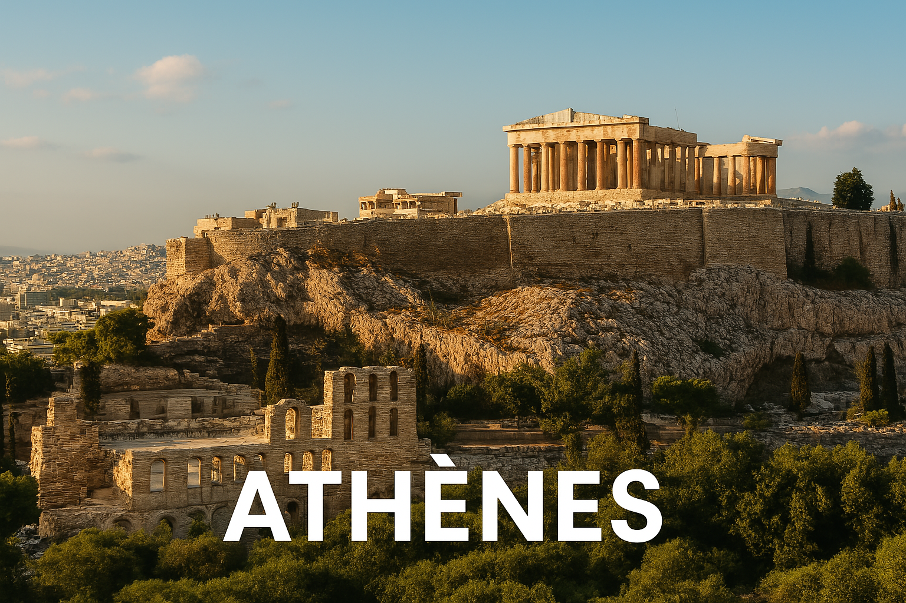

Athènes
Athènes est le berceau de la démocratie et de la philosophie occidentale, célèbre pour l’Acropole.

Le savais-tu ? 🦊
L’Acropole d’Athènes est visible de presque partout en ville ! 🏛️
Petit Quiz 🧠
Quel philosophe est né à Athènes ?
Carte interactive